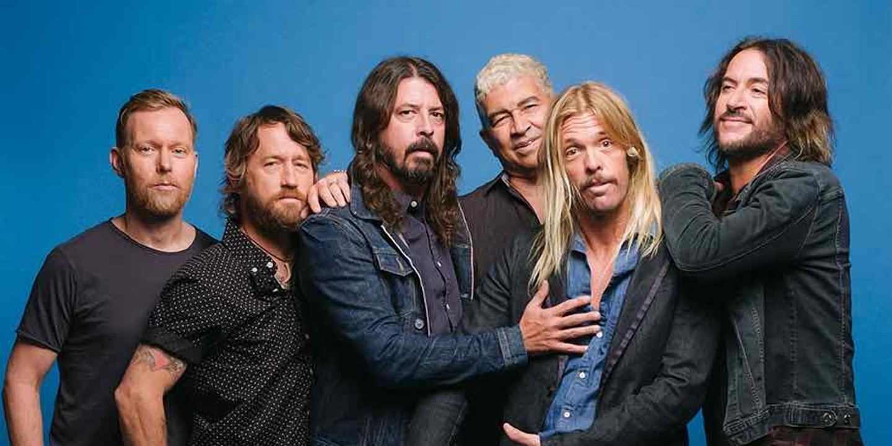
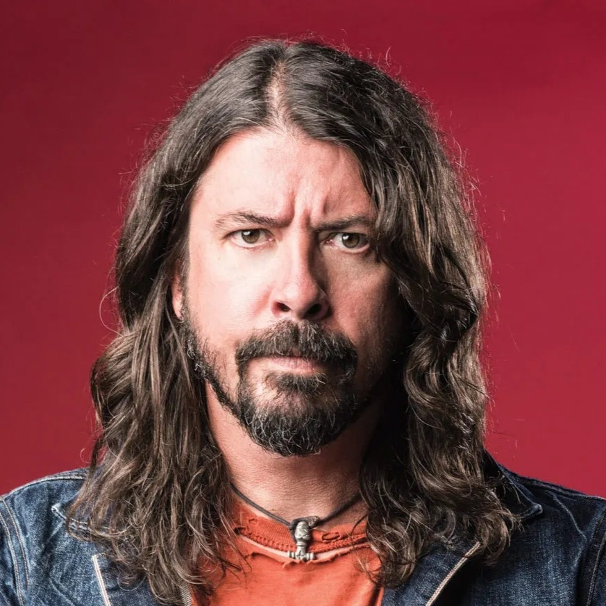
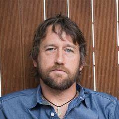
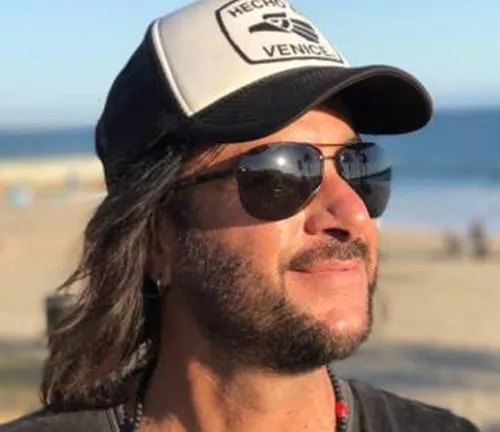
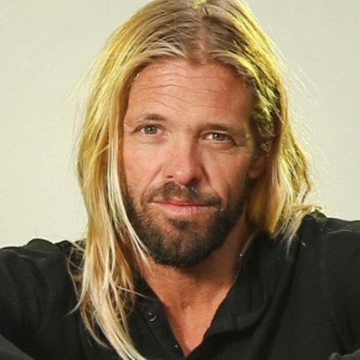

Foo Fighters
Les Foo Fighters sont un groupe américain de hard rock, formé à Seattle en 1994 par Dave Grohl, l’ancien batteur de Nirvana. Le nom du groupe vient du terme « foo fighter », qui désignait des phénomènes aériens inexpliqués observés par des pilotes pendant la Seconde Guerre mondiale. Le groupe a sorti dix albums studio, dont le dernier, Medicine at Midnight, est paru en 2021. Les Foo Fighters ont remporté 12 Grammy Awards et vendu plus de 30 millions d’albums dans le monde. Le groupe est actuellement composé de Dave Grohl (chant, guitare), Pat Smear (guitare), Nate Mendel (basse), Chris Shiflett (guitare), Rami Jaffee (claviers) et Taylor Hawkins (batterie) décédé récemment.
Les Membres
Dave Grohl:
 Il est le fondateur, le leader, le chanteur et le guitariste des Foo Fighters. Il a commencé sa carrière musicale comme batteur dans différents groupes de punk rock, dont Scream et Nirvana. Il a enregistré le premier album des Foo Fighters en solo, en jouant tous les instruments. Il est aussi connu pour ses collaborations avec d’autres artistes, comme Queens of the Stone Age, Tenacious D ou Paul McCartney.
Nate Mendel:
Il est le bassiste des Foo Fighters depuis 1995. Il a rejoint le groupe après avoir quitté Sunny Day Real Estate, un groupe de rock alternatif dont il était le cofondateur. Il a aussi participé à d’autres projets musicaux, comme The Fire Theft, Lieutenant ou The Jealous Sound.
Pat Smear:
Il est le guitariste rythmique des Foo Fighters. Il a été le premier guitariste recruté par Dave Grohl en 1995, mais il a quitté le groupe en 1997. Il est revenu en 2006 comme membre de tournée, puis comme membre officiel en 2010. Il a aussi été le guitariste live de Nirvana de 1993 à 1994. Il est l’ancien membre des Germs, un groupe de punk rock influent des années 1970.
Chris Shiflett:
 Il est le guitariste soliste des Foo Fighters depuis 1999. Il a remplacé Franz Stahl, qui avait succédé à Pat Smear en 1997. Il a aussi joué dans d’autres groupes de punk rock, comme No Use for a Name, Me First and the Gimme Gimmes ou Jackson United. Il a également sorti des albums solo sous son nom ou sous le pseudonyme de Chris Shiflett & the Dead Peasants.
Rami Jaffee:
 Il est le claviériste des Foo Fighters depuis 2017. Il a rejoint le groupe comme membre de tournée en 2005, puis comme membre officiel en 2017. Il est l’ancien membre des Wallflowers, un groupe de rock alternatif mené par Jakob Dylan. Il a aussi collaboré avec de nombreux artistes, comme Tom Petty, Pearl Jam ou The Strokes.
Taylor Hawkins:
 Il était le batteur des Foo Fighters depuis 1997, mais il est malheureusement décédé le 25 mars 2022, à l’âge de 50 ans. Il a été retrouvé mort dans un hôtel de Bogota, en Colombie, où le groupe devait se produire. Les causes de sa mort n’ont pas été communiquées, mais il aurait consommé du cannabis, des opiacés et des antidépresseurs. C’est une grande perte pour le monde de la musique. 😢